Analysing convergence of estimates using downsampling
Outline
In this analysis we evaluate the performance and. stability of the estimates of LineageHomology in various scenarios of sampling density. Our main question is: Do we have enough genomes to reliably estimates the relative values of import, export and local transmission.
To answer this question we perform a down-sampling analysis by removing isolates from the focal location, and isolates from outside of the locations. The results in our main analysis is based on a binary division of the isolates to the focal location: Norway, Victoria, Europe or the USA, and the rest of the rest-of-the-world (ROW). For example, when the focus is shifted from Norway from Victoria, all the genomes from Norway will be placed in the ROW category, and vice versa.
For each focal location we down-sample the focal location and the rest of the world in a step-wise fashion. In the case of the Norwegian analysis, there are \(1723\) genomes from Norway. Fom the phylogeny we step-wise remove isolates \(0, 100, 200,..., 1690, 1700,1710\) and trim the terminal and possibly internal branches. For each down-sampled dataset we re-estimate the geography by maximum likelihood using ace and rerun LineageHomology to estimate import, export and local transmission. In the Norwegian analysis, there are \(8007\) genomes from ROW, and we step-wise remove \(0, 1000, 2000, ... , 7700, 7800, 7900, 7950\), and similarly re-estimate.
Downsampling analysis
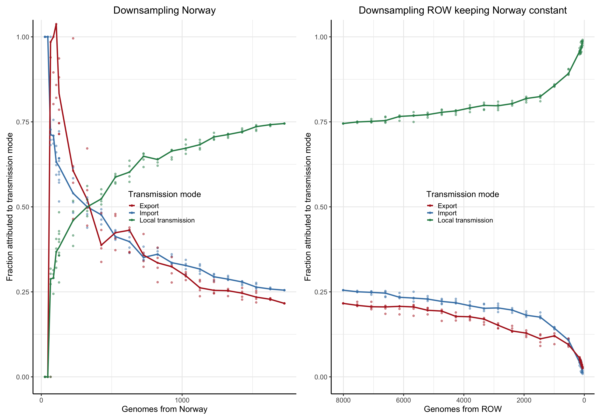
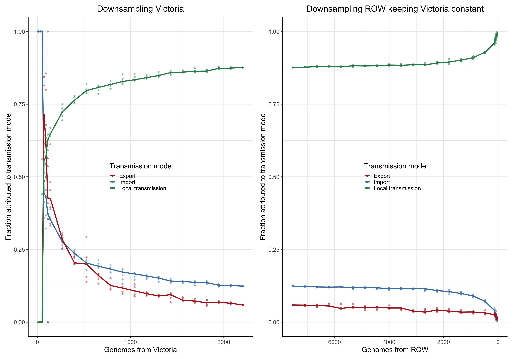
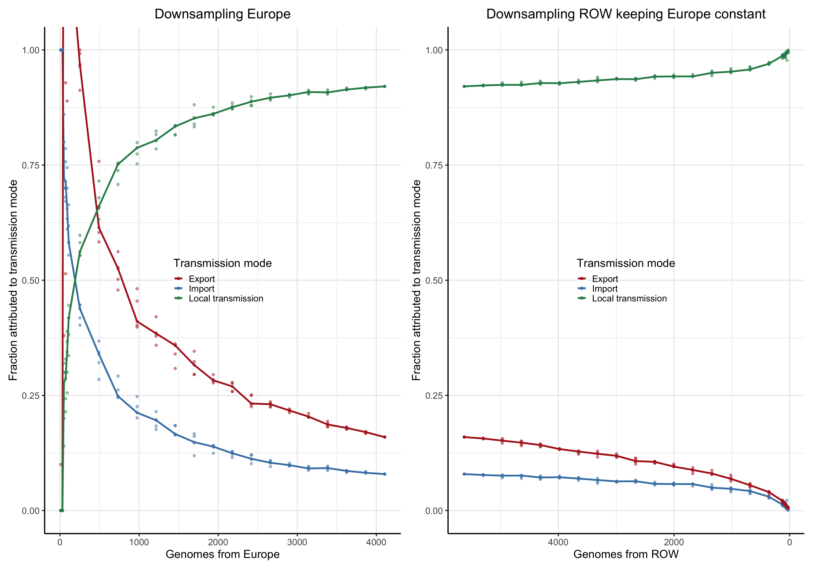
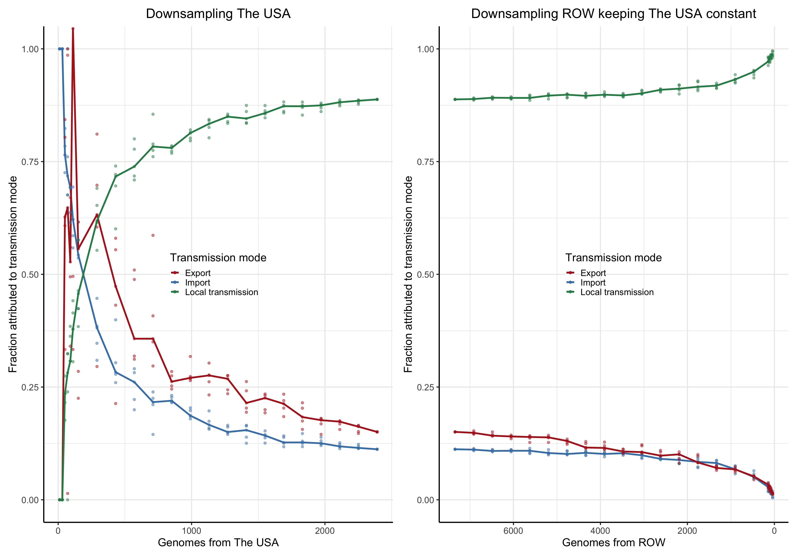
Asymptote of Import in downsamples
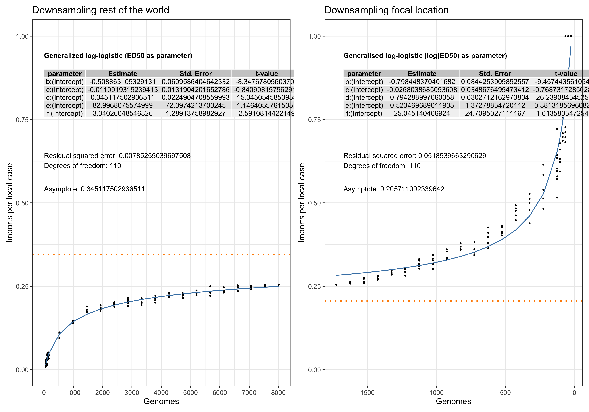
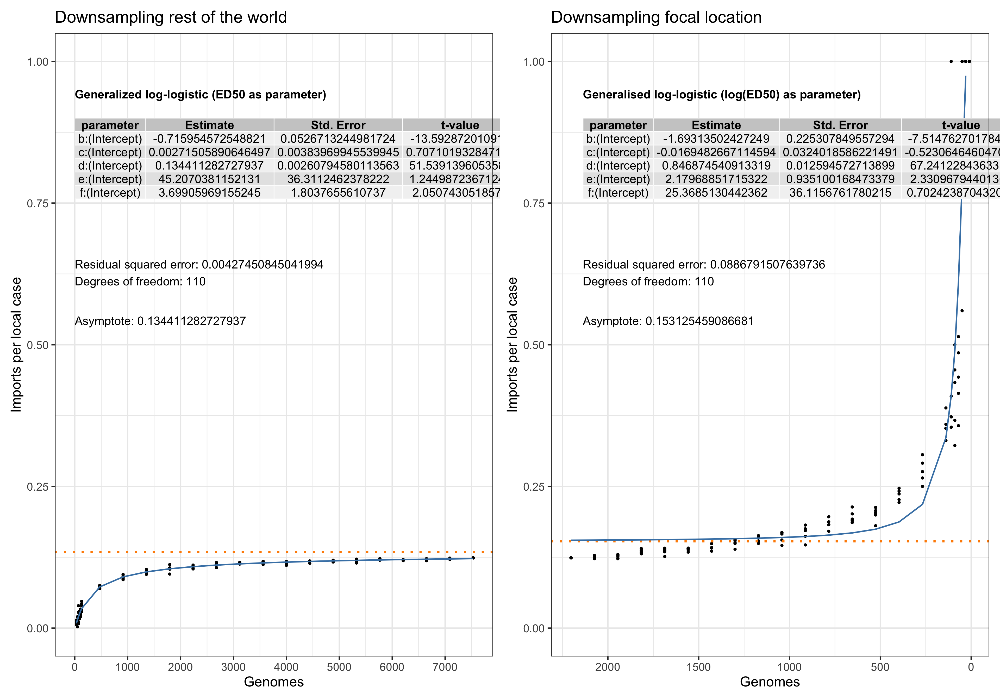
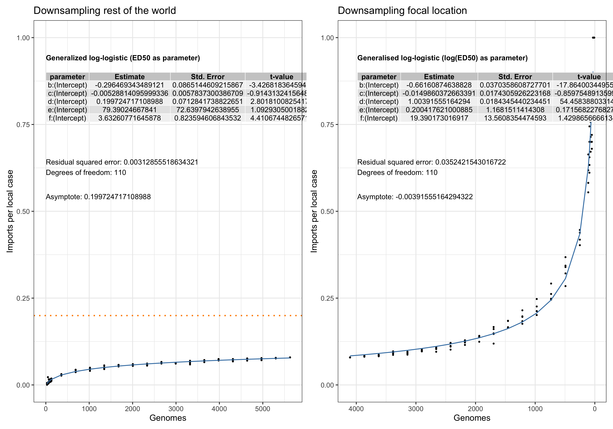
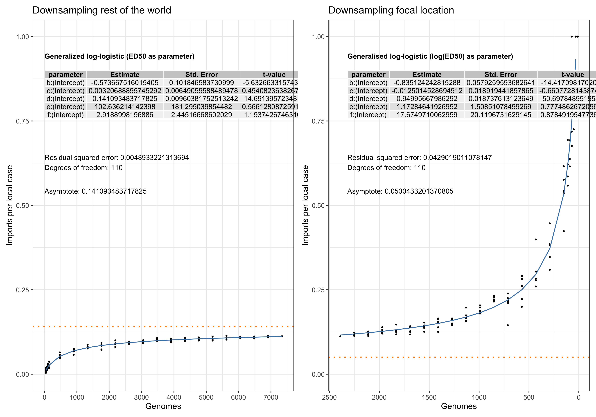
Asymptote of Export in downsamples
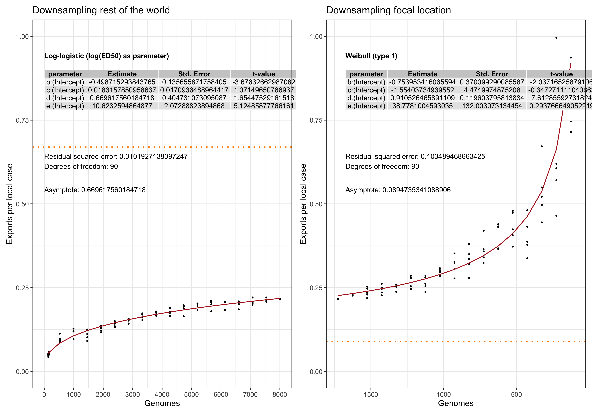
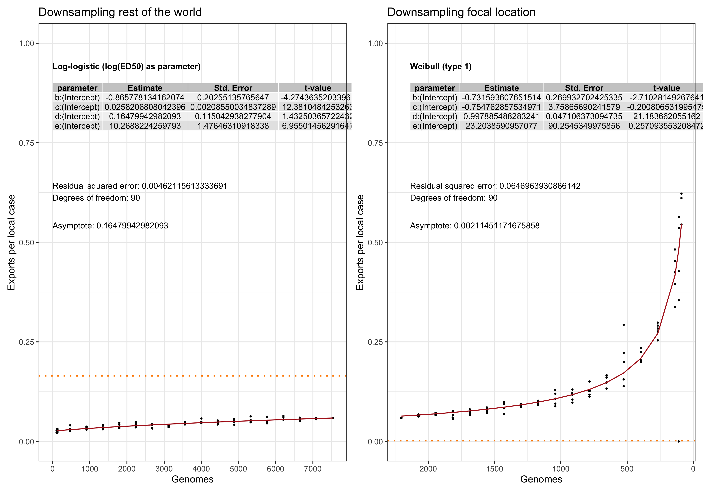
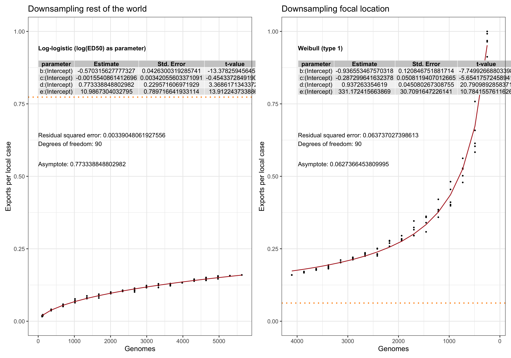